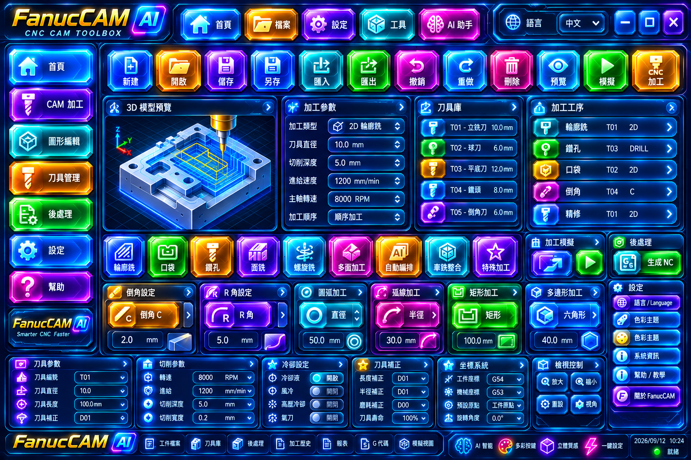
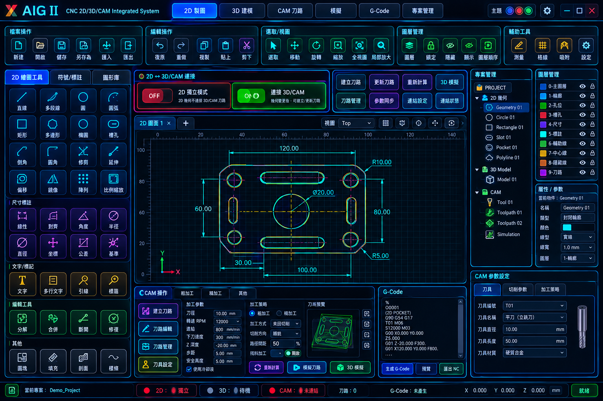
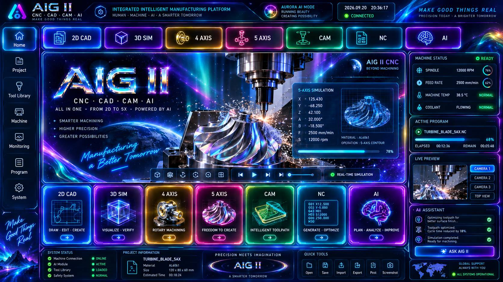
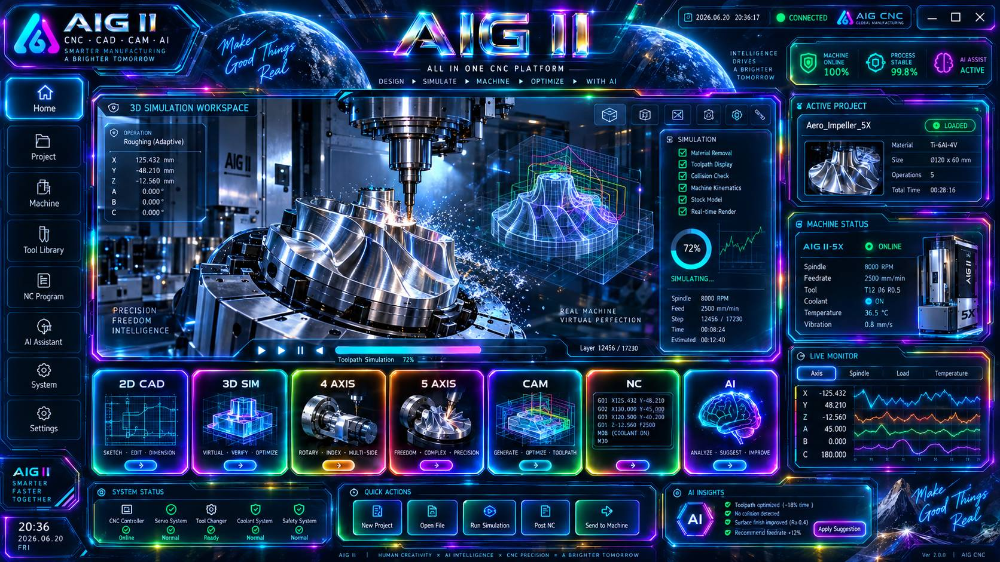
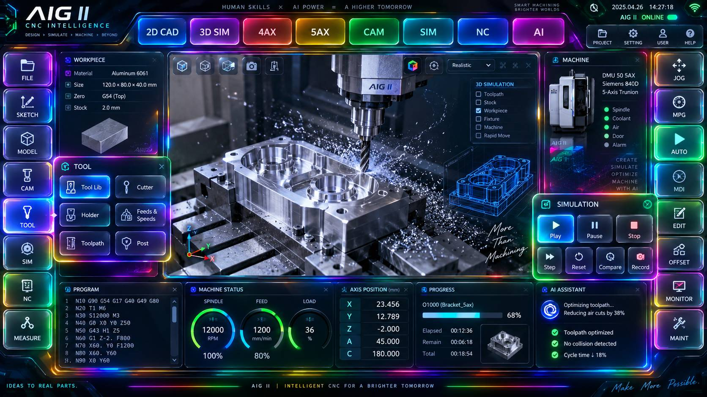
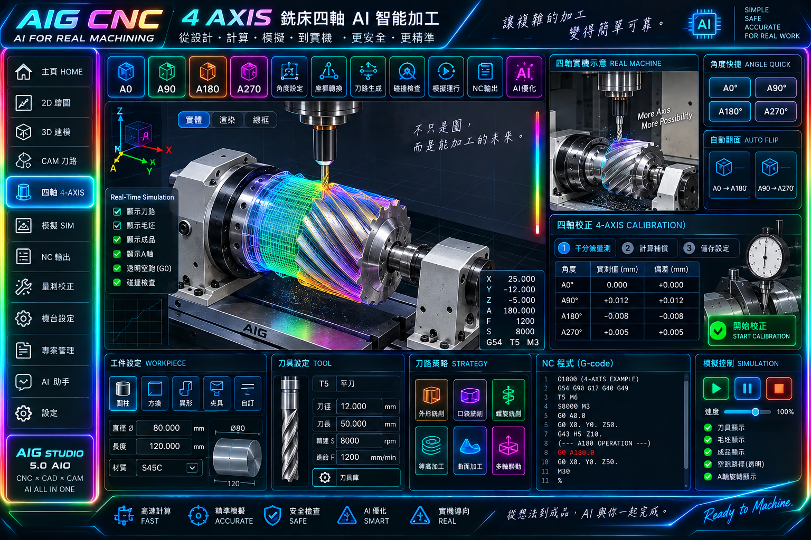
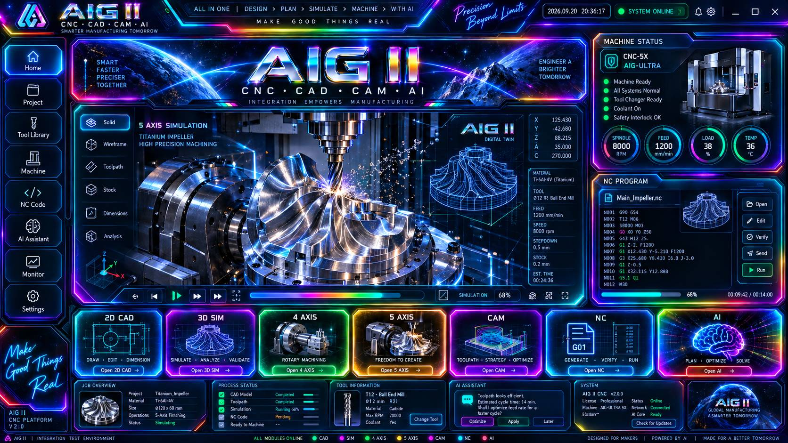
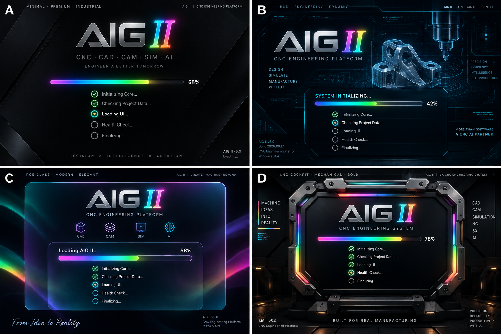

HOME 首頁已入庫歷史參考
主頁 · 此圖供視覺對照；原生 Mobile/Desktop Authority 仍須獨立核對
IMG-AIGII-ARCHIVE-HOME-V1
來源 Git blob：2c8bd47d29c426…
進入 HOME 真工作頁 ↗
先把已確實存在 GitHub 原檔的圖貼到網站：整頁參考 9 張、RGB 元件 32 張。每張都有穩定 Image ID 與原始 Git blob SHA；點圖可以單獨檢視原檔。
原圖身分說明：本次上架的是 uiux/assets/ 中可驗證的既有圖庫，不擅自把它升格成「10/5 至今最後核准 Mobile／Desktop Authority」。10/5 原始核准圖索引仍標示 PENDING_BINARY_INGEST。此圖庫是可見的分類與原圖對照，不會用整張圖片假冒真按鈕、畫布或 CNC 訊息。
已載入圖片分類
所有 10 頁 Authority 均已入庫，缺公開原圖者不使用舊圖替代

主頁 · 此圖供視覺對照；原生 Mobile/Desktop Authority 仍須獨立核對
IMG-AIGII-ARCHIVE-HOME-V1
來源 Git blob：2c8bd47d29c426…
進入 HOME 真工作頁 ↗

設計與加工 · 此圖供視覺對照；原生 Mobile/Desktop Authority 仍須獨立核對
IMG-AIGII-ARCHIVE-CAD-V1
來源 Git blob：f1a5199864f00a…
進入 CAD 真工作頁 ↗

設計與加工 · 此圖供視覺對照；原生 Mobile/Desktop Authority 仍須獨立核對
IMG-AIGII-ARCHIVE-CAM-V1
來源 Git blob：b4abf10e8388be…
進入 CAM 真工作頁 ↗

設計與加工 · 此圖供視覺對照；原生 Mobile/Desktop Authority 仍須獨立核對
IMG-AIGII-ARCHIVE-SIM-V1
來源 Git blob：82c5810ab89ae1…
進入 SIM 真工作頁 ↗

多軸加工 · 此圖供視覺對照；原生 Mobile/Desktop Authority 仍須獨立核對
IMG-AIGII-ARCHIVE-3AX-V1
來源 Git blob：be6166ae8d5577…
進入 3AX 真工作頁 ↗

多軸加工 · 此圖供視覺對照；原生 Mobile/Desktop Authority 仍須獨立核對
IMG-AIGII-ARCHIVE-4AX-V1
來源 Git blob：e53a14a8fc3feb…
進入 4AX 真工作頁 ↗

多軸加工 · 此圖供視覺對照；原生 Mobile/Desktop Authority 仍須獨立核對
IMG-AIGII-ARCHIVE-5AX-V1
來源 Git blob：82b2c3426caca5…
進入 5AX 真工作頁 ↗
僅用於原圖對照，不可替代 3～6 軸動態加工模型

延伸參考 · 此圖供視覺對照；原生 Mobile/Desktop Authority 仍須獨立核對
IMG-AIGII-ARCHIVE-MACHINE-V1
來源 Git blob：82c5810ab89ae1…

延伸參考 · 此圖供視覺對照；原生 Mobile/Desktop Authority 仍須獨立核對
IMG-AIGII-ARCHIVE-STARTUP-V1
來源 Git blob：b44e968ba7c55e…
兩平台應各有獨立版本鏈、尺寸與檔案 SHA
基準 1440×3088；另適配 1080×2316、720×1544。
歷史圖庫可對照；最後核准的 10 頁 Mobile 原始圖尚未逐頁核對入庫正式目標 3840×2160（4K）。
歷史圖庫可對照；最後核准的 10 頁 Desktop 原始圖尚未逐頁核對入庫來源：已存的 RGB 184 元件包。元件只負責外觀，操作仍由 Runtime callback 驅動
來源：uiux/aig-image-library.json、docs/assets/2026-10-05-morning-approved-rgb-index.json。完整項目資料：Image ID / Button ID / Git SHA Manifest ↗